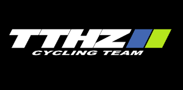

<!DOCTYPE html>
<html lang="en">
<head>
    <meta charset="utf-8">
    <meta http-equiv="X-UA-Compatible" content="IE=edge">
    <meta name="viewport" content="width=device-width, initial-scale=1">
    <meta name="description" content="">
    <meta name="author" content="">

    <title>Grupposportivo</title>

    <!-- Bootstrap core CSS -->
    <link href="css/bootstrap.css" rel="stylesheet">

    <!-- Custom styles for this template -->
    <link href="css/style.css" rel="stylesheet">


    <!-- HTML5 shim and Respond.js for IE8 support of HTML5 elements and media queries -->
    <!--[if lt IE 9]>
    <script src="https://oss.maxcdn.com/html5shiv/3.7.2/html5shiv.min.js"></script>
    <script src="https://oss.maxcdn.com/respond/1.4.2/respond.min.js"></script>
    <![endif]-->

</head>

<body>

<nav class="navbar navbar-inverse navbar-fixed-top">
    <div class="container">
        <div class="navbar-header">
            <button type="button" class="navbar-toggle collapsed" data-toggle="collapse" data-target="#navbar" aria-expanded="false" aria-controls="navbar">
                <span class="sr-only">Toggle navigation</span>
                <span class="icon-bar"></span>
                <span class="icon-bar"></span>
                <span class="icon-bar"></span>
            </button>

        </div>
        <div id="navbar" class="navbar-collapse collapse">
            <ul class="nav navbar-nav">
                <li><a href="#">Home</a></li>
                <li class="dropdown">
                    <a href="#" class="dropdown-toggle" data-toggle="dropdown" role="button"
                       aria-expanded="false">
                        Ritten
                    <span class="caret"></span>
                    </a>
                    <ul class="dropdown-menu" role="menu">
                        <li><a href="#">Grupposportivo ritten</a> </li>
                        <li><a href="#">Oefenritten</a> </li>
                        <li><a href="#">Klassiekers</a> </li>
                        <li><a href="#">Permanente ritten</a> </li>
                    </ul>
                </li>
                <li><a href="#">Leden</a></li>
                <li><a href="#">Aanwezigheidslijst</a></li>
                <li><a href="#">Fotoalbums</a></li>
                <li><a href="#">Video's</a></li>
            </ul>
        </div><!--/.navbar-collapse -->
    </div>
</nav>

<!-- Main bcg_header for a primary marketing message or call to action -->
<div class="bcg_header"><!-- class bcg_header in bootstrap.css op regel 4850 ongeveer -->
    <div class="container">
        <div id="logo_wrap" class="col-md-4"></div>
        <div id="club_name_wrap" class="col-md-8">
            
            <div class="slogan">samen uit - samen thuis</div>
            <div class="route">Café Flipper Heirstraat 156 3630 Maasmechelen</div>
        </div>
    </div>
</div>

<div class="container container_wrap">
    <!-- Example row of columns -->
    <div class="row">
        <div id="sidebar_left" class="col-md-3">
            <div id="sponsors_zijbalk">
                <h2>Sponsors</h2>
                <p></p>
                <p>Dit wordt een slider met alle sponsors</p>
            </div>

            <div id="ritten_zijbalk">
                <h2>Volgende clubrit</h2>
                <p>Ronde van Vlaanderen zaterdag, 4 april, 2015 (Hele dag)</p>
                <a href="#" class="btn btn-gruppo" role="button">Clubritten</a>
                <hr>
                <h2>Volgende klassieker</h2>
                <p>Vlijtingen zondag, 8 maart, 2015 - 09:00</p>
                <a href="#" class="btn btn-gruppo" role="button">Klassiekers</a>
                <hr>
                <h2>Volgende oefenrit</h2>
                <p>Geen rit gepland voor het ogenblik</p>
                <a href="#" class="btn btn-gruppo" role="button">Oefenritten</a>
                <hr>
            </div>
        </div><!-- end sidebar_left -->

        <div id="content_wrap" class="col-md-9">
            <div class="news_anoniem">
                <h2>Pastadag</h2>
                
                <p>Donec lobortis nisl non scelerisque consequat. Pellentesque convallis nisl eu magna
                    facilisis, ac rhoncus enim tristique. In pulvinar facilisis felis, et lobortis diam
                    rhoncus non. Sed eget iaculis mi. Suspendisse vestibulum volutpat nulla vitae dictum.
                    Suspendisse nisl nisl, ultricies convallis vestibulum quis, auctor at enim. Cras ultricies
                    lectus magna, sit amet blandit ante viverra eu.
                    Suspendisse magna lacus, posuere id scelerisque at, bibendum in nisl. </p>
            </div><!-- news_anoniem -->
            <div class="news_leden">
                <h2>Volgende ledenvergadering</h2>
                
                <p>Nullam auctor mi leo, in porttitor diam tempor id. Phasellus ut maximus dui. Etiam pretium
                    purus quis imperdiet congue. Nullam lorem risus, consequat ac sollicitudin at, faucibus
                    eget nisi. Fusce sed arcu lacus. Quisque molestie
                    eros in dui vulputate dignissim. Maecenas sodales lorem eros, ac hendrerit metus
                    pharetra ut. </p>
            </div><!-- end news_leden -->

            <div class="content">
            <h2>Welkom bij wielertoeristenclub Gruppo Sportivo.</h2>
            
            <p>Welkom op onze site, wij zijn Grupposportivo uit Maasmechelen.</p>

                <p>Het doel van onze club bestaat erin om tijdens de weekends en feestdagen 
                    onze passie met elkaar te delen en ons goed te amuseren. 
                    Ons motto is dan ook "samen uit, samen thuis."</p>

                <p>Maar omdat de verschillen tussen de fietsliefhebbers soms nogal groot kunnen
                    worden, is de club ingedeeld in twee groepen. A en B, iedere groep heeft
                    een aangepaste snelheid.</p>

                <p>De A-ploeg haalt een snelheid van ongeveer 28 à 30 km/u of meer,</p>
                <p>De B-ploeg doet het iets rustiger met een snelheid van ongeveer 25 à 26 km/u.</p>

                <p>Soms rijden we in streken waar wel wat heuveltjes te beklimmen zijn en waar we
                    ons kunnen uitleven, maar boven op elke helling wordt er steeds gewacht tot
                    de groep weer volledig is, zo gaat het ook bij lekke banden of andere
                    materiaalpech.</p>

                <p>De sfeer is op en top en er wordt dan ook steeds gelachen. Eigenlijk zijn we
                    een grote vriendengroep die uit is op een gezellige zaterdag- of zondagsrit.
                    Na elke fietstocht gaan we graag nog eens napraten bij pot en pint in ons lokaal, 
                    Café Flipper.</p>

            </div><! end content -->

            <hr>
            <div id="content_bottom_wrap">
                <div class="bottom_first col-md-4">
                    <div class="bottom_content">
                        <h3>Blog</h3>
                        <p>MTB tocht 16/12/2012: Zelfs de regen houdt ons niet tegen !<br>nog wat tekst als test blablabla</p>

                    </div>
                    <a href="#" class="btn btn-gruppo" role="button">Meer</a>
                </div>
                <div class="bottom_midle col-md-4">
                    <div class="bottom_content">
                        <h3>Nieuwe inhoud</h3>
                        <p>Gezamelijke rit Rotem - As</p>
                    </div>
                    <a href="#" class="btn btn-gruppo" role="button">Meer</a>
                </div>
                <div class="bottom_last col-md-4">
                    <div class="bottom_content">
                        <h3>Wielerflits</h3>
                        <p>Ronde van Vlaanderen integraal op tv</p>
                    </div>
                    <a href="#" class="btn btn-gruppo" role="button">Meer</a>
                </div>
            </div>
        </div><!-- end content_wrap -->
    </div><!-- end row -->


</div> <!-- /container -->
<div class="container">
    <footer>
        <p>&copy; Grupposportivo 2014</p>
    </footer>
</div>
<!-- Bootstrap core JavaScript
================================================== -->
<!-- Placed at the end of the document so the pages load faster -->
<script src="https://ajax.googleapis.com/ajax/libs/jquery/1.11.2/jquery.min.js"></script>
<script src="js/bootstrap.min.js"></script>
<!-- IE10 viewport hack for Surface/desktop Windows 8 bug -->
<script src="js/ie10-viewport-bug-workaround.js"></script>
<!-- Backstretch -->
<!-- onderstaande code aanpassen voor de theme -->
<!--<script src="<?php print base_path() . path_to_theme(); ?>/js/jquery.js"></script>
<script src="<?php print base_path() . path_to_theme(); ?>/js/jquery.backstretch.js"></script> -->
<script src="js/jquery.js"></script>
<script src="js/jquery.backstretch.js"></script>

<script>$(".bcg_header").backstretch([
        "images/cycling-race.jpg",
        "images/groot_100702-wielrenners-min.jpg"
        ] , {
        fade: 750, duration: 4000
        });
</script>

</body>
</html>
